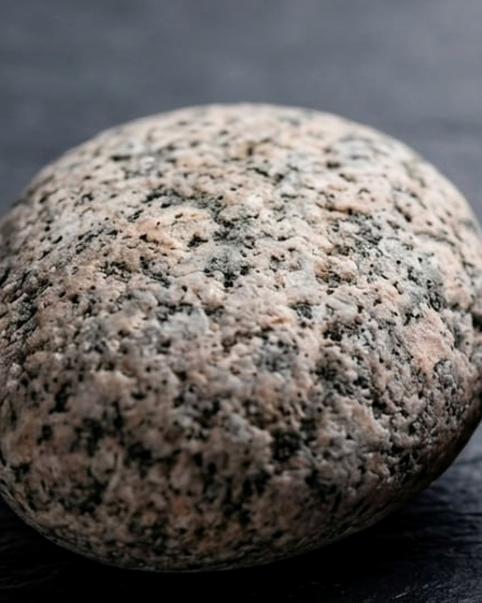
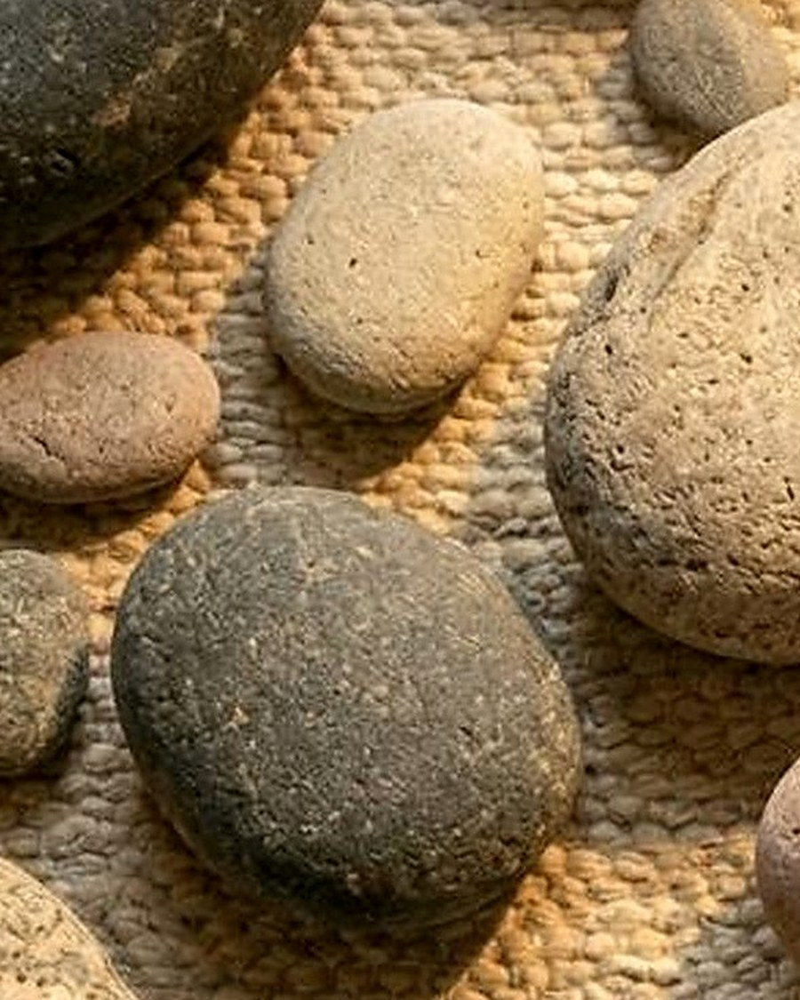
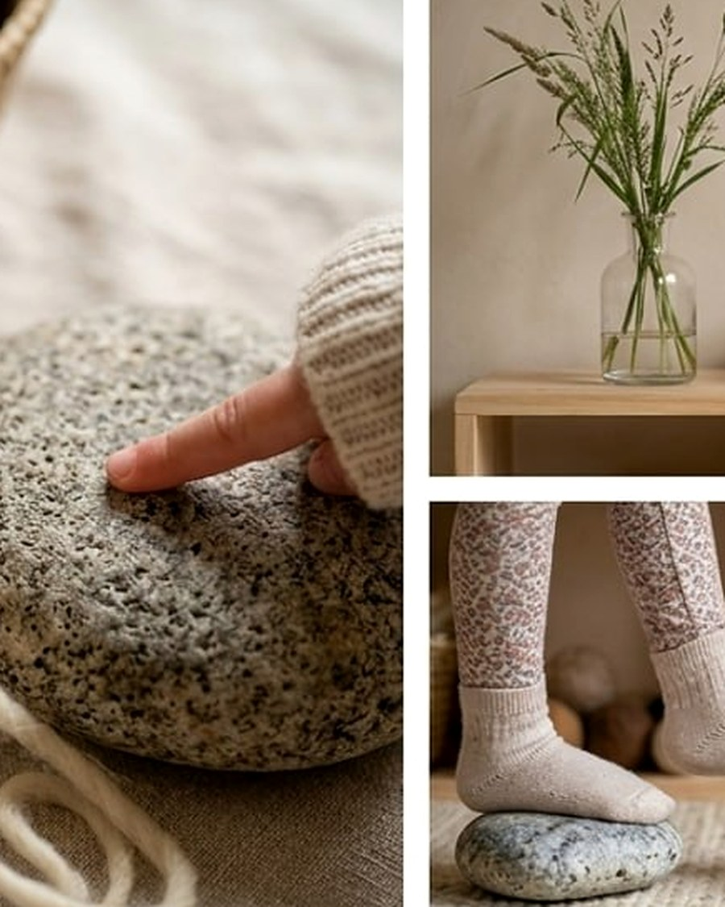

Balance
Uneven surfaces encourage careful steps, posture shifts, and body awareness.
Silicone stepping stones cast from real river rock — biomimetic texture, earth tones, and the quiet confidence of learning to trust your footing.

Sarn Stone turns ordinary floor space into a small landscape: a route to test, rearrange, cross, return to, and master. Quiet enough for the room, rich enough for bare feet.
Uneven surfaces encourage careful steps, posture shifts, and body awareness.
Stone-cast ridges give sensory feedback without bright plastic or noise.


The Launch Set — six silicone stones, each shaped by a real river rock. Weighted, non-slip, and considered enough to leave out.

Cast from the grooves and ridges of natural river stone. Every surface holds the memory of water.
Heavy, non-slip silicone that grips any floor — and your attention only when it earns it.
Colors drawn from riverbeds and forests. As at home on a coffee table as in a playroom.
Durable enough for the wildest leaps. Wipe clean, or pop them in the dishwasher.



We watched our children longing for the forest floor — the uneven joy of stone and root. Sarn Stone brings that grounding underfoot indoors: cast from real river rocks in food-grade silicone, heavy enough to stay put, soft enough to feel like the earth itself.
This is not a toy. It is an invitation to move with curiosity, balance, and care.

Children who learn to trust uneven, textured surfaces develop better balance and body awareness.
When a toy doesn't light up or make noise, imagination does the work — longer, more focused sessions.
Designed to age gracefully — to feel more themselves the more they're used. Quality as a value, not a claim.
Leave your name and we'll be in touch when Sarn Stone is ready to ship. Thoughtful updates only — sent with more care than urgency.